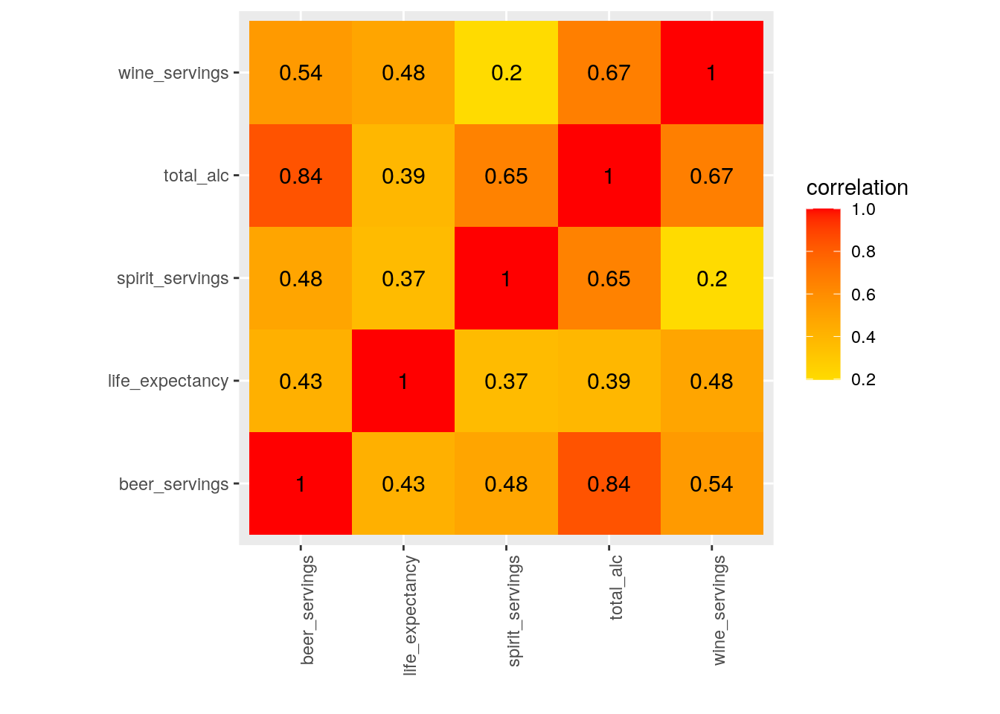
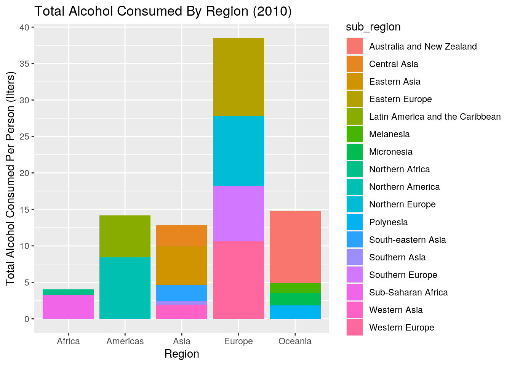
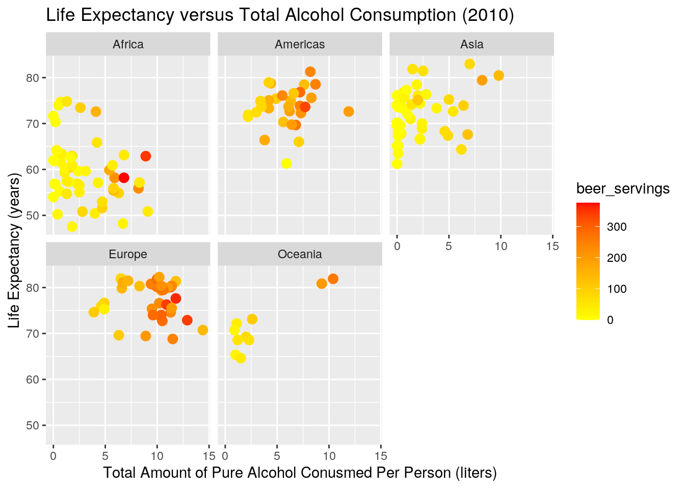
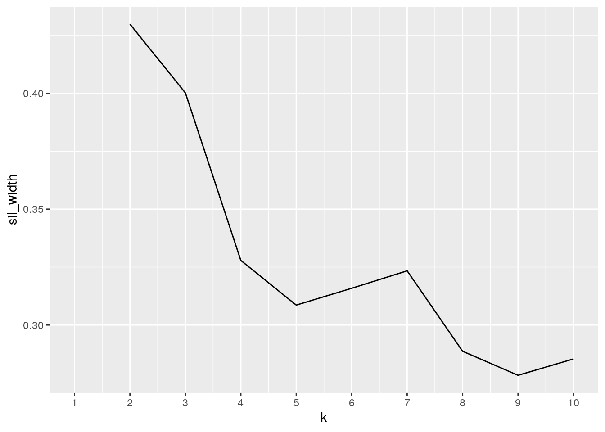
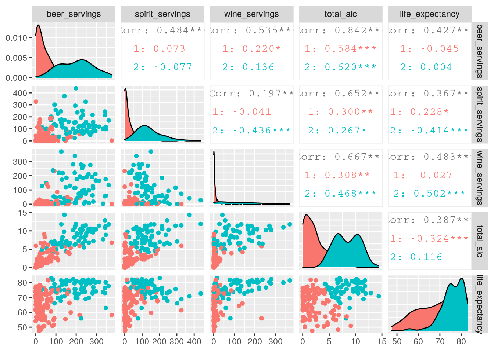
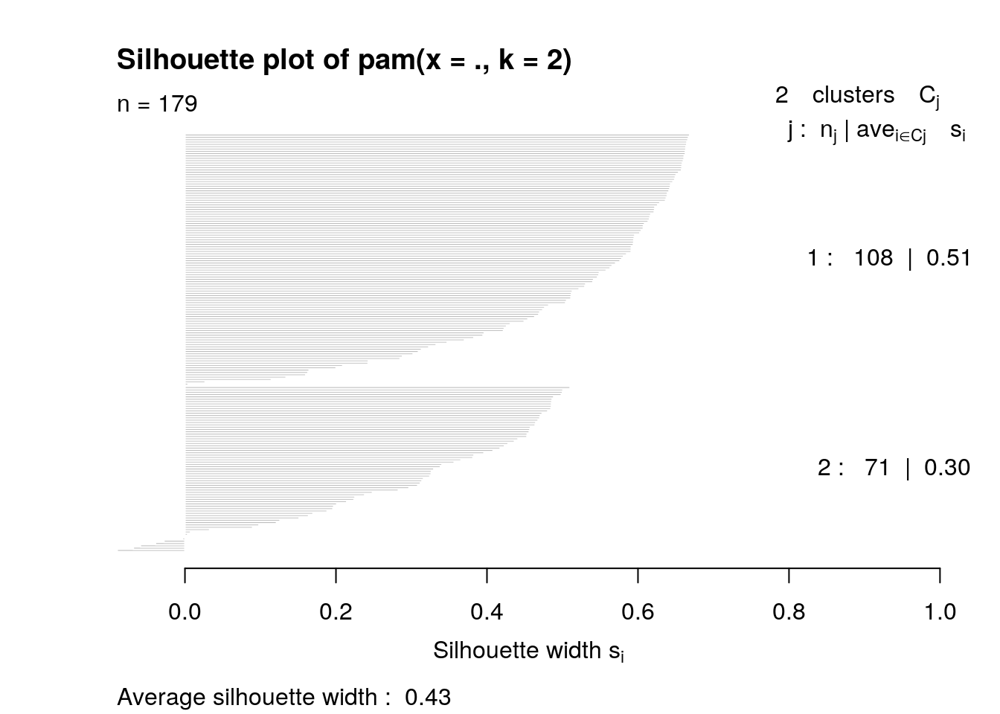
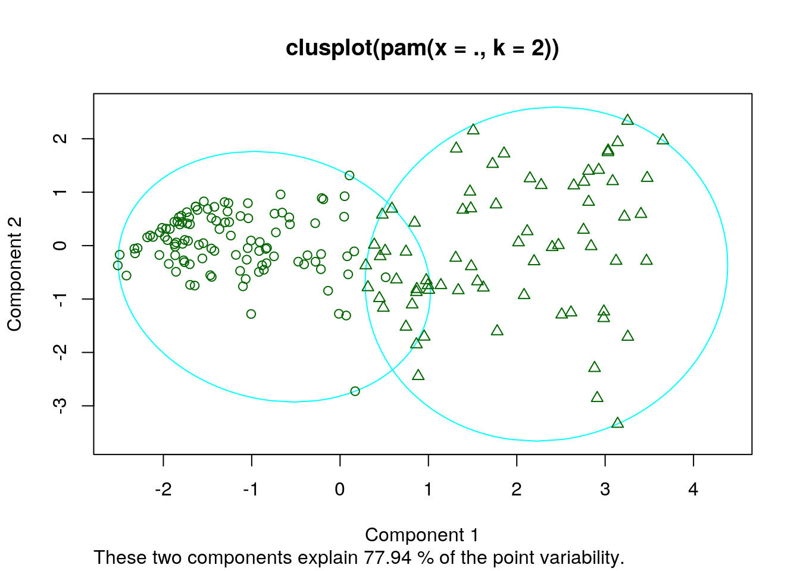

Jocelyn Harnold (jh67282)
During the last few semesters as a pre-health student, I have become more and more invested in upstream factors that affect health throughout the world. One of the most well-known poisons to our bodies is alcohol. I want to compare the life-expectancies to the amount of alcohol consumed per person for each country recorded in 2010. The dataset,"drinks", records the amount of beer, wine, and spirits consumed per person in each country in 2010 and was taken from the R-package "fivethirtyeight" while the original data was collected from the World Health Organization. What makes the "drinks" dataset interesting is that it not only records the total liters of pure alcohol per person, but also records the consumption of different categories of alcohol per person, such as the average servings of beer, spirits, and wine per person. On the other hand, I used github to find my "life" dataset which recorded the life expectancies of different countries around the world from 1950 to 2015. Specifically, this dataset includes the variables, country, country code/abbreviation, year, and life expectancy. While this dataset is not particularly interesting, it is necessary in order for me to compare the life expectancies of each country to their respective alcohol consumption per person. From the abundance of previous research, I expect to see life expectancy to have a weak negative correlation with total liters of pure alcohol consumed per person. However, I am aware that there may be many confounding factors, such as environment and education level that may disturb and complicate this correlation. Finally, I decided to add another data set that specified the regions each country belonged to so I could find a correlation between regions of the world, alcohol consumption, and life expectancy.
# install.packages('fivethirtyeight')
library(knitr)
library(fivethirtyeight)
data()
`?`(fivethirtyeight::drinks)
life <- read.csv("https://raw.githubusercontent.com/rfordatascience/tidytuesday/master/data/2018/2018-07-03/week14_global_life_expectancy.csv")
regions <- read.csv("https://raw.githubusercontent.com/lukes/ISO-3166-Countries-with-Regional-Codes/master/all/all.csv")
drinks <- drinksWhile the data in both datasets are already relatively tidy in the sense that every observation has its own row and every variable it own column, the dataset, drinks, is missing observations of alcohol consumption from every year except 2010. On the other hand, the "life" dataset has recorded the life expectancies for every country from 1950 to 2015. To prevent an abundance of N/As when I merge the datasets, I used pivot_wider() to separate the year column into different years and then I used select() to only include the life expectancy values from 2010. In order to demonstrate the proper use of pivot_wider() and pivot_longer(), I also made my data untidy and tidy again. First, I used pivot_wider() in the same way as used above to make every single distinct year a distinct column with the values under each year becoming the life expectancy corresponding with that specific year and country. Next, I used pivot_longer() to re-tidy the data by specifying only the numeric variables would turn into the two new columns, year and life_expectancy. The year column contained the names of the only numeric variables which were all the different year columns created previously. The values originally under the their respective year columns were compiled into a life expectancy column. I used select() to pick out only the region and subregions of the regions dataset. This simplification of the dataset will make the joining later a lot easier and streamlined with less N/As.
library(tidyverse)
life1 <- life %>% pivot_wider(names_from = "year", values_from = "life_expectancy") %>%
select(country, code, life_expectancy = "2010")
life1## # A tibble: 241 x 3
## country code life_expectancy
## <fct> <fct> <dbl>
## 1 Afghanistan "AFG" 61.2
## 2 Africa "" 58.7
## 3 Albania "ALB" 76.7
## 4 Algeria "DZA" 74.7
## 5 Angola "AGO" 58.2
## 6 Antigua and Barbuda "ATG" 75.4
## 7 Argentina "ARG" 75.6
## 8 Armenia "ARM" 73.3
## 9 Aruba "ABW" 75.0
## 10 Asia "" 71.1
## # … with 231 more rowslife %>% pivot_wider(names_from = "year", values_from = "life_expectancy") %>%
pivot_longer(is.numeric, names_to = "year", values_to = "life_expectancy")## # A tibble: 73,987 x 4
## country code year life_expectancy
## <fct> <fct> <chr> <dbl>
## 1 Afghanistan AFG 1950 27.5
## 2 Afghanistan AFG 1951 27.8
## 3 Afghanistan AFG 1952 28.4
## 4 Afghanistan AFG 1953 28.9
## 5 Afghanistan AFG 1954 29.4
## 6 Afghanistan AFG 1955 29.9
## 7 Afghanistan AFG 1956 30.4
## 8 Afghanistan AFG 1957 30.9
## 9 Afghanistan AFG 1958 31.4
## 10 Afghanistan AFG 1959 31.8
## # … with 73,977 more rowsregions <- regions %>% select(name, region, sub_region = sub.region)I decided to use full_join()to join my two datasets because I wanted to receive a full picture of what a combined dataset would look like without any observations omitted. The function, full_join() piped into arrange(country) came in handy because I was able to go through my complete dataset in alphabetical order after joining to see if there were any errors/ mistypes in the data that could be fixed. For example, after joining life1 (which is my modified life dataset that is exclusive to 2010) to the drinks dataset, I discovered that the United States was labeled as "USA" in the drinks dataset and "United States" in the life dataset. As a result, the observations that were supposed to belong to the same row were separated. By quickly scanning through my dataset and fixing this issue, I was able to prevent to omission of our home country from the combined data that I would later use for analysis. After using full_join() to combine my two datasets, I then used na.omit() to get rid of extra observations that could not later be used to analyze the data because they lacked vital information. Before I joined the two datasets, drinks had 193 observations and 5 variables while life 1 had 241 observations and 3 variables. Using anti_join(), I determined that drinks had 14 countries that were not included in life1 while life1 had 62 countries/regions that were not included in drinks. Using this information, I expected to see 76 total observations dropped from the fully joined dataset, 14 from drinks and 62 from life1. After using full_join() and na.omit() to join my datasets and omit N/As, my final dataset contained 179 observations. I then decided to join my newly made fulldata dataset with my regions dataset in order to include regional data in the final dataset. I made sure to rename all the observations in the fulldata dataset to match the regions dataset so that when I joined, I would still have a complete final dataset observation count of 179. I used left_join() to join my regions dataset and fulldata because I wanted to keep all of the original fulldata intact while only adding relevant countries from the regions dataset that matched fulldata. After na.omit()my final fulldata dataset included 179 observations.
library(dplyr)
drinks[185, "country"] <- "United States"
drinks[6, "country"] <- "Antigua and Barbuda"
drinks[22, "country"] <- "Bosnia and Herzegovina"
drinks[48, "country"] <- "Democratic Republic of Congo"
drinks[111, "country"] <- "Micronesia (country)"
drinks[142, "country"] <- "Russia"
drinks[149, "country"] <- "Sao Tome and Principe"
drinks[152, "country"] <- "Serbia (including Kosovo)"
drinks[172, "country"] <- "Timor"
drinks[175, "country"] <- "Trinidad and Tobago"
dim(drinks)## [1] 193 5dim(life1)## [1] 241 3anti_join(drinks, life1)## # A tibble: 14 x 5
## country beer_servings spirit_servings wine_servings total_litres_of_pu…
## <chr> <int> <int> <int> <dbl>
## 1 Andorra 245 138 312 12.4
## 2 Cabo Verde 144 56 16 4
## 3 Cook Islands 0 254 74 5.9
## 4 Dominica 52 286 26 6.6
## 5 Marshall Isl… 0 0 0 0
## 6 Monaco 0 0 0 0
## 7 Nauru 49 0 8 1
## 8 Niue 188 200 7 7
## 9 Palau 306 63 23 6.9
## 10 St. Kitts & … 194 205 32 7.7
## 11 St. Lucia 171 315 71 10.1
## 12 St. Vincent … 120 221 11 6.3
## 13 San Marino 0 0 0 0
## 14 Tuvalu 6 41 9 1anti_join(life1, drinks)## # A tibble: 62 x 3
## country code life_expectancy
## <fct> <fct> <dbl>
## 1 Africa "" 58.7
## 2 Aruba "ABW" 75.0
## 3 Asia "" 71.1
## 4 Australia/New Zealand "" 81.7
## 5 Cape Verde "CPV" 71.9
## 6 Caribbean "" 71.9
## 7 Central America "" 75.3
## 8 Central Asia "" 68.7
## 9 Channel Islands "OWID_CIS" 80.1
## 10 Curacao "CUW" 77.0
## # … with 52 more rows14 + 62## [1] 76fulldata <- life1 %>% full_join(drinks) %>% arrange(country) %>%
na.omit
fulldata[20, "country"] <- "Bolivia (Plurinational State of)"
fulldata[24, "country"] <- "Brunei Darussalam"
fulldata[39, "country"] <- "Côte d'Ivoire"
fulldata[43, "country"] <- "Czechia"
fulldata[44, "country"] <- "Congo, Democratic Republic of the"
fulldata[75, "country"] <- "Iran (Islamic Republic of)"
fulldata[88, "country"] <- "Lao People's Democratic Republic"
fulldata[96, "country"] <- "North Macedonia"
fulldata[106, "country"] <- "Micronesia (Federated States of)"
fulldata[107, "country"] <- "Moldova, Republic of"
fulldata[120, "country"] <- "Korea (Democratic People's Republic of)"
fulldata[133, "country"] <- "Russian Federation"
fulldata[139, "country"] <- "Serbia"
fulldata[148, "country"] <- "Korea, Republic of"
fulldata[153, "country"] <- "Eswatini"
fulldata[156, "country"] <- "Syrian Arab Republic"
fulldata[158, "country"] <- "Tanzania, United Republic of"
fulldata[160, "country"] <- "Timor-Leste"
fulldata[170, "country"] <- "United Kingdom of Great Britain and Northern Ireland"
fulldata[171, "country"] <- "United States of America"
fulldata[175, "country"] <- "Venezuela (Bolivarian Republic of)"
fulldata[176, "country"] <- "Viet Nam"
anti_join(fulldata, regions, by = c(country = "name"))## # A tibble: 0 x 7
## # … with 7 variables: country <chr>, code <fct>, life_expectancy <dbl>,
## # beer_servings <int>, spirit_servings <int>, wine_servings <int>,
## # total_litres_of_pure_alcohol <dbl>fulldata <- fulldata %>% left_join(regions, by = c(country = "name")) %>%
arrange(country) %>% na.omit %>% rename(total_alc = total_litres_of_pure_alcohol)
head(fulldata)## # A tibble: 6 x 9
## country code life_expectancy beer_servings spirit_servings wine_servings
## <chr> <fct> <dbl> <int> <int> <int>
## 1 Afghan… AFG 61.2 0 0 0
## 2 Albania ALB 76.7 89 132 54
## 3 Algeria DZA 74.7 25 0 14
## 4 Angola AGO 58.2 217 57 45
## 5 Antigu… ATG 75.4 102 128 45
## 6 Argent… ARG 75.6 193 25 221
## # … with 3 more variables: total_alc <dbl>, region <fct>, sub_region <fct>First, I thought it would be interesting to find the proportion of the total pure alcohol drank that was beer, spirits, and wine, respectively. After using mutate(), select(), and arrange(), I found that the European countries, in general, consumed the most total alcohol but the most popular drink varied depending on the country. Supporting the stereotypes, the French drank a greater proportion of wine while Russians drank a greater proportion of spirits. Next, I took the mean for all the numeric variables in my dataset separately and then grouped by region and sub-region. The whole world drank on average more beer and a total of about 4.7 liters of pure alcohol while the average life expectancy was about 70 years old. When looking at the means grouped by region, it was clear that Europe consumed the most total alcohol while Asia consumed the least, but Europe still had the highest average life expectancy while Africa had the lowest mean life expectancy by 10 years when compared to the next closest region. The mean of subregions once again enforced that almost all the sub regions that were considered "Western" (Australia, America, Europe) had high total means of alcohol while still maintaining high mean life expectancies. The general standard deviation for all the numeric variables showed that the world has a large spread of beer drinkers (sd = 101.2112 beer cans), a large spread of total alcohol consumption (sd = ~3.7 liters), but had a relatively small spread of expected life expectancy (sd = ~ 8.6 years). The region standard deviations showed that Oceanic countries had the largest spread of total alcohol consumed but Africa had the greatest spread of life expectancy. Sub regional standard deviations showed that Eastern Asia had the highest deviation for both total alcohol consumed and life expectancy, which is expected when you think of Japan and South Korea having some of the world's highest life expectancies. The patterns shown in the variance of the general variables and then grouped by region and subregion were similar to the patterns shown in standard deviation with the exception of having the variance of spirit consumption being quite high (var = 7226.127).
library(dplyr)
library(knitr)
# Average proportions of beer, spirits, and wine drank per
# person by country
fulldata %>% mutate(prop_beer = beer_servings/total_alc, prop_spirits = spirit_servings/total_alc,
prop_wine = wine_servings/total_alc) %>% select(country,
region, prop_beer, prop_spirits, prop_wine, total_alc) %>%
arrange(-total_alc) %>% head() %>% kable| country | region | prop_beer | prop_spirits | prop_wine | total_alc |
|---|---|---|---|---|---|
| Belarus | Europe | 9.861111 | 25.90278 | 2.916667 | 14.4 |
| Lithuania | Europe | 26.589147 | 18.91473 | 4.341085 | 12.9 |
| Grenada | Americas | 16.722689 | 36.80672 | 2.352941 | 11.9 |
| Czechia | Europe | 30.593220 | 14.40678 | 11.355932 | 11.8 |
| France | Europe | 10.762712 | 12.79661 | 31.355932 | 11.8 |
| Russian Federation | Europe | 21.478261 | 28.34783 | 6.347826 | 11.5 |
# mean for all numeric variables
fulldata %>% select_if(is.numeric) %>% summarize(mean_total = mean(total_alc),
mean_life = mean(life_expectancy), mean_beer = mean(beer_servings),
mean_spirits = mean(spirit_servings), mean_wine = mean(wine_servings)) %>%
kable| mean_total | mean_life | mean_beer | mean_spirits | mean_wine |
|---|---|---|---|---|
| 4.701117 | 69.83503 | 106.2235 | 77.39106 | 50.02793 |
# mean for all numeric variables grouped by region
fulldata %>% group_by(region) %>% summarize(mean_total = mean(total_alc),
mean_life = mean(life_expectancy), mean_beer = mean(beer_servings),
mean_spirits = mean(spirit_servings), mean_wine = mean(wine_servings)) %>%
kable| region | mean_total | mean_life | mean_beer | mean_spirits | mean_wine |
|---|---|---|---|---|---|
| Africa | 2.988462 | 59.64471 | 59.88462 | 15.57692 | 16.26923 |
| Americas | 5.900000 | 73.58974 | 158.35484 | 134.25806 | 37.83871 |
| Asia | 2.185106 | 72.00564 | 35.51064 | 60.21277 | 12.85106 |
| Europe | 9.441026 | 77.38990 | 216.30769 | 145.48718 | 150.84615 |
| Oceania | 3.230000 | 71.51920 | 88.60000 | 37.70000 | 44.90000 |
# mean for all numeric varialbe grouped by sub region
fulldata %>% group_by(sub_region) %>% summarize(mean_total = mean(total_alc),
mean_life = mean(life_expectancy), mean_beer = mean(beer_servings),
mean_spirits = mean(spirit_servings), mean_wine = mean(wine_servings)) %>%
kable| sub_region | mean_total | mean_life | mean_beer | mean_spirits | mean_wine |
|---|---|---|---|---|---|
| Australia and New Zealand | 9.8500000 | 81.38350 | 232.000000 | 75.500000 | 193.50000 |
| Central Asia | 2.8200000 | 68.55580 | 40.200000 | 106.000000 | 11.60000 |
| Eastern Asia | 5.3400000 | 75.12420 | 74.600000 | 119.800000 | 8.20000 |
| Eastern Europe | 10.7200000 | 73.04500 | 236.600000 | 242.900000 | 93.00000 |
| Latin America and the Caribbean | 5.7241379 | 73.15376 | 152.413793 | 133.862069 | 34.10345 |
| Melanesia | 1.4000000 | 68.29850 | 49.500000 | 25.750000 | 3.50000 |
| Micronesia | 1.6500000 | 66.96800 | 41.500000 | 42.000000 | 9.50000 |
| Northern Africa | 0.7333333 | 71.34800 | 17.000000 | 4.333333 | 7.50000 |
| Northern America | 8.4500000 | 79.91150 | 244.500000 | 140.000000 | 92.00000 |
| Northern Europe | 9.5600000 | 78.56500 | 242.100000 | 130.400000 | 130.50000 |
| Polynesia | 1.8500000 | 72.64750 | 70.500000 | 19.500000 | 14.50000 |
| South-eastern Asia | 2.1909091 | 71.06346 | 46.818182 | 48.363636 | 13.00000 |
| Southern Asia | 0.5555556 | 69.25367 | 5.888889 | 24.888889 | 0.00000 |
| Southern Europe | 7.5916667 | 78.04433 | 160.833333 | 99.416667 | 163.25000 |
| Sub-Saharan Africa | 3.2826087 | 58.11820 | 65.478261 | 17.043478 | 17.41304 |
| Western Asia | 1.9294118 | 74.16965 | 31.000000 | 55.588235 | 21.29412 |
| Western Europe | 10.6142857 | 80.79628 | 245.571429 | 106.857143 | 241.28571 |
# sd for all numeric variables
fulldata %>% select_if(is.numeric) %>% summarize(sd_total = sd(total_alc),
sd_life = sd(life_expectancy), sd_beer = sd(beer_servings),
sd_spirits = sd(spirit_servings), sd_wine = sd(wine_servings)) %>%
kable| sd_total | sd_life | sd_beer | sd_spirits | sd_wine |
|---|---|---|---|---|
| 3.765887 | 8.649445 | 101.2112 | 85.00663 | 79.77584 |
# sd for all numeric variables grouped by region
fulldata %>% group_by(region) %>% summarize(sd_total = sd(total_alc),
sd_life = sd(life_expectancy), sd_beer = sd(beer_servings),
sd_spirits = sd(spirit_servings), sd_wine = sd(wine_servings)) %>%
kable| region | sd_total | sd_life | sd_beer | sd_spirits | sd_wine |
|---|---|---|---|---|---|
| Africa | 2.669703 | 6.802738 | 80.50275 | 27.81758 | 39.22540 |
| Americas | 2.114868 | 4.146418 | 77.30397 | 86.21947 | 61.45464 |
| Asia | 2.524401 | 5.190728 | 43.18558 | 75.19480 | 31.56427 |
| Europe | 2.449674 | 3.914034 | 83.07706 | 81.02010 | 90.79576 |
| Oceania | 3.544652 | 5.836648 | 80.88291 | 23.15191 | 79.20361 |
# sd for all numeric variables grouped by sub region
fulldata %>% group_by(sub_region) %>% summarize(sd_total = sd(total_alc),
sd_life = sd(life_expectancy), sd_beer = sd(beer_servings),
sd_spirits = sd(spirit_servings), sd_wine = sd(wine_servings)) %>%
kable| sub_region | sd_total | sd_life | sd_beer | sd_spirits | sd_wine |
|---|---|---|---|---|---|
| Australia and New Zealand | 0.7778175 | 0.7445849 | 41.012193 | 4.949747 | 26.162951 |
| Central Asia | 2.3941596 | 1.4027835 | 48.080141 | 85.457592 | 12.198360 |
| Eastern Asia | 3.5871995 | 6.7233365 | 49.681989 | 102.328882 | 5.674504 |
| Eastern Europe | 2.0890189 | 3.1543348 | 80.558054 | 73.206633 | 56.223759 |
| Latin America and the Caribbean | 2.0715169 | 3.9031779 | 76.385076 | 89.101757 | 61.789010 |
| Melanesia | 0.4690416 | 2.6019121 | 23.388031 | 13.400871 | 5.000000 |
| Micronesia | 0.9192388 | 2.2825442 | 28.991378 | 11.313709 | 12.020815 |
| Northern Africa | 0.6531973 | 4.6307349 | 18.633304 | 4.844241 | 8.479387 |
| Northern America | 0.3535534 | 1.9410053 | 6.363961 | 25.455844 | 11.313709 |
| Northern Europe | 2.0961340 | 3.5193249 | 59.526745 | 66.831795 | 74.103906 |
| Polynesia | 1.0606602 | 0.6710479 | 48.790368 | 2.121320 | 13.435029 |
| South-eastern Asia | 2.4357564 | 5.5945966 | 38.633711 | 89.345702 | 36.622397 |
| Southern Asia | 0.9422196 | 4.8485849 | 8.506533 | 47.792375 | 0.000000 |
| Southern Europe | 2.6465959 | 2.8351449 | 88.821408 | 45.975207 | 99.696015 |
| Sub-Saharan Africa | 2.6951235 | 5.4240770 | 83.839195 | 29.246049 | 41.523528 |
| Western Asia | 2.1724884 | 4.2130007 | 45.938818 | 55.636161 | 42.484945 |
| Western Europe | 0.9118271 | 0.7911583 | 72.451954 | 27.913131 | 69.951684 |
# var for all numeric variables
fulldata %>% select_if(is.numeric) %>% summarize(var_total = var(total_alc),
var_life = var(life_expectancy), var_beer = var(beer_servings),
var_spirits = var(spirit_servings), var_wine = var(wine_servings)) %>%
kable| var_total | var_life | var_beer | var_spirits | var_wine |
|---|---|---|---|---|
| 14.18191 | 74.8129 | 10243.7 | 7226.127 | 6364.185 |
# var for all numeric variables grouped by region
fulldata %>% group_by(region) %>% summarize(var_total = var(total_alc),
var_life = var(life_expectancy), var_beer = var(beer_servings),
var_spirits = var(spirit_servings), var_wine = var(wine_servings)) %>%
kable| region | var_total | var_life | var_beer | var_spirits | var_wine |
|---|---|---|---|---|---|
| Africa | 7.127315 | 46.27724 | 6480.692 | 773.8175 | 1538.6320 |
| Americas | 4.472667 | 17.19278 | 5975.903 | 7433.7978 | 3776.6731 |
| Asia | 6.372599 | 26.94366 | 1864.994 | 5654.2581 | 996.3034 |
| Europe | 6.000904 | 15.31966 | 6901.798 | 6564.2564 | 8243.8704 |
| Oceania | 12.564556 | 34.06646 | 6542.044 | 536.0111 | 6273.2111 |
# var for all numeric variables grouped by sub region
fulldata %>% group_by(sub_region) %>% summarize(var_total = var(total_alc),
var_life = var(life_expectancy), var_beer = var(beer_servings),
var_spirits = var(spirit_servings), var_wine = var(wine_servings)) %>%
kable| sub_region | var_total | var_life | var_beer | var_spirits | var_wine |
|---|---|---|---|---|---|
| Australia and New Zealand | 0.6050000 | 0.5544066 | 1682.00000 | 24.50000 | 684.500 |
| Central Asia | 5.7320000 | 1.9678014 | 2311.70000 | 7303.00000 | 148.800 |
| Eastern Asia | 12.8680000 | 45.2032531 | 2468.30000 | 10471.20000 | 32.200 |
| Eastern Europe | 4.3640000 | 9.9498282 | 6489.60000 | 5359.21111 | 3161.111 |
| Latin America and the Caribbean | 4.2911823 | 15.2347977 | 5834.67980 | 7939.12315 | 3817.882 |
| Melanesia | 0.2200000 | 6.7699465 | 547.00000 | 179.58333 | 25.000 |
| Micronesia | 0.8450000 | 5.2100081 | 840.50000 | 128.00000 | 144.500 |
| Northern Africa | 0.4266667 | 21.4437061 | 347.20000 | 23.46667 | 71.900 |
| Northern America | 0.1250000 | 3.7675015 | 40.50000 | 648.00000 | 128.000 |
| Northern Europe | 4.3937778 | 12.3856475 | 3543.43333 | 4466.48889 | 5491.389 |
| Polynesia | 1.1250000 | 0.4503052 | 2380.50000 | 4.50000 | 180.500 |
| South-eastern Asia | 5.9329091 | 31.2995110 | 1492.56364 | 7982.65455 | 1341.200 |
| Southern Asia | 0.8877778 | 23.5087752 | 72.36111 | 2284.11111 | 0.000 |
| Southern Europe | 7.0044697 | 8.0380464 | 7889.24242 | 2113.71970 | 9939.295 |
| Sub-Saharan Africa | 7.2636908 | 29.4206112 | 7029.01063 | 855.33140 | 1724.203 |
| Western Asia | 4.7197059 | 17.7493751 | 2110.37500 | 3095.38235 | 1804.971 |
| Western Europe | 0.8314286 | 0.6259314 | 5249.28571 | 779.14286 | 4893.238 |
# summary of all the numeric variables; not grouped
fulldata %>% select_if(is.numeric) %>% summary() %>% kable| life_expectancy | beer_servings | spirit_servings | wine_servings | total_alc | |
|---|---|---|---|---|---|
| Min. :47.56 | Min. : 0.0 | Min. : 0.00 | Min. : 0.00 | Min. : 0.000 | |
| 1st Qu.:63.45 | 1st Qu.: 21.0 | 1st Qu.: 4.00 | 1st Qu.: 1.00 | 1st Qu.: 1.300 | |
| Median :72.28 | Median : 76.0 | Median : 51.00 | Median : 8.00 | Median : 4.200 | |
| Mean :69.84 | Mean :106.2 | Mean : 77.39 | Mean : 50.03 | Mean : 4.701 | |
| 3rd Qu.:75.98 | 3rd Qu.:188.5 | 3rd Qu.:122.00 | 3rd Qu.: 60.50 | 3rd Qu.: 7.200 | |
| Max. :82.97 | Max. :376.0 | Max. :438.00 | Max. :370.00 | Max. :14.400 |
The minimums for all the general numerical variables except for life expectancy were 0. This minimum zero consumption of alcohol is further discovered to belong to the regions, Africa and Asia where there are large Muslim populations who do not drink. The maximum of total alcohol consumed is unsurprisingly Europe while the max life expectancy belongs to Asia. Surprisingly, the max amount of beer and wine consumed in the world belongs to the African region. Using group_by() on two categorial variables, region and sub_region, was useful in identifying the disparities between sub regions in each region for the minimum of the numerical variables. Earlier, it was discussed that East Asia had the largest standard deviation for life expectancy and alcohol consumption, using filter() I was able to determine that Mongola and Japan had a difference in life expectancy of about 15 years while the zero total alcohol consumption in North Korea is contrasted starkly against South Korea's high alcohol consumption (total_alc = 9.8 liters). Finally, I created a correlation matrix comparing the numerical variables in fulldata. From this matrix, I determined that life expectancy did not have a strong correlation with any of the alcohol consumption variables. However, total alcohol consumption correlated strongly with beer servings consumed per person, pointing to the fact that most people's increased consumption of beer correlates to an increase of their total alcohol consumption.
# min for all numeric variables grouped by region
fulldata %>% group_by(region, sub_region) %>% summarize(min_total = min(total_alc),
min_life = min(life_expectancy), min_beer = min(beer_servings),
min_spirits = min(spirit_servings), min_wine = min(wine_servings)) %>%
kable| region | sub_region | min_total | min_life | min_beer | min_spirits | min_wine |
|---|---|---|---|---|---|---|
| Africa | Northern Africa | 0.0 | 62.620 | 0 | 0 | 0 |
| Africa | Sub-Saharan Africa | 0.0 | 47.560 | 0 | 0 | 0 |
| Americas | Latin America and the Caribbean | 2.2 | 61.296 | 1 | 25 | 1 |
| Americas | Northern America | 8.2 | 78.539 | 240 | 122 | 84 |
| Asia | Central Asia | 0.3 | 66.657 | 2 | 15 | 0 |
| Asia | Eastern Asia | 0.0 | 67.383 | 0 | 0 | 0 |
| Asia | South-eastern Asia | 0.1 | 64.357 | 1 | 0 | 0 |
| Asia | Southern Asia | 0.0 | 61.226 | 0 | 0 | 0 |
| Asia | Western Asia | 0.0 | 63.508 | 0 | 0 | 0 |
| Europe | Eastern Europe | 6.3 | 68.813 | 109 | 122 | 18 |
| Europe | Northern Europe | 6.6 | 72.738 | 152 | 60 | 56 |
| Europe | Southern Europe | 3.9 | 74.009 | 31 | 27 | 8 |
| Europe | Western Europe | 9.4 | 80.072 | 127 | 75 | 175 |
| Oceania | Australia and New Zealand | 9.3 | 80.857 | 203 | 72 | 175 |
| Oceania | Melanesia | 0.9 | 64.634 | 21 | 11 | 1 |
| Oceania | Micronesia | 1.0 | 65.354 | 21 | 34 | 1 |
| Oceania | Polynesia | 1.1 | 72.173 | 36 | 18 | 5 |
# max for all numeric variables grouped by region
fulldata %>% group_by(region) %>% summarize(max_total = max(total_alc),
max_life = max(life_expectancy), max_beer = max(beer_servings),
max_spirits = max(spirit_servings), max_wine = max(wine_servings)) %>%
kable| region | max_total | max_life | max_beer | max_spirits | max_wine |
|---|---|---|---|---|---|
| Africa | 9.1 | 74.793 | 376 | 152 | 233 |
| Americas | 11.9 | 81.284 | 333 | 438 | 221 |
| Asia | 9.8 | 82.974 | 192 | 258 | 149 |
| Europe | 14.4 | 82.270 | 361 | 373 | 370 |
| Oceania | 10.4 | 81.910 | 261 | 79 | 212 |
# Compared the mean life expectancy and mean total alcohol
# consumption by liters in East Asian countries
fulldata %>% filter(sub_region == "Eastern Asia") %>% group_by(country) %>%
summarize(mean_life = mean(life_expectancy), mean_total_alc = mean(total_alc)) %>%
arrange(mean_life) %>% kable| country | mean_life | mean_total_alc |
|---|---|---|
| Mongolia | 67.383 | 4.9 |
| Korea (Democratic People's Republic of) | 69.572 | 0.0 |
| China | 75.236 | 5.0 |
| Korea, Republic of | 80.456 | 9.8 |
| Japan | 82.974 | 7.0 |
# created a correlation matrix comparing all of the numerical
# variables in fulldata
cormat <- fulldata %>% select_if(is.numeric) %>% cor(use = "pair")
cormat## life_expectancy beer_servings spirit_servings wine_servings
## life_expectancy 1.0000000 0.4268397 0.3672607 0.4829906
## beer_servings 0.4268397 1.0000000 0.4835822 0.5352715
## spirit_servings 0.3672607 0.4835822 1.0000000 0.1974770
## wine_servings 0.4829906 0.5352715 0.1974770 1.0000000
## total_alc 0.3871442 0.8415037 0.6520482 0.6670153
## total_alc
## life_expectancy 0.3871442
## beer_servings 0.8415037
## spirit_servings 0.6520482
## wine_servings 0.6670153
## total_alc 1.0000000The following is a correlation heatmap. As shown in the heatmap, all of the correlations between the alcohol-related variables and life expectancy did not have a strong correlation (between .37 to .48). However, it is shown that total pure alcohol consumption was strongly correlated with beer servings, showing that a greater amount of beer consumed correlates with a greater total amount of alcohol consumed in general.
# correlation heat map
tidycor <- cormat %>% as.data.frame %>% rownames_to_column("var1") %>%
pivot_longer(-1, names_to = "var2", values_to = "correlation")
tidycor## # A tibble: 25 x 3
## var1 var2 correlation
## <chr> <chr> <dbl>
## 1 life_expectancy life_expectancy 1
## 2 life_expectancy beer_servings 0.427
## 3 life_expectancy spirit_servings 0.367
## 4 life_expectancy wine_servings 0.483
## 5 life_expectancy total_alc 0.387
## 6 beer_servings life_expectancy 0.427
## 7 beer_servings beer_servings 1
## 8 beer_servings spirit_servings 0.484
## 9 beer_servings wine_servings 0.535
## 10 beer_servings total_alc 0.842
## # … with 15 more rowstidycor %>% ggplot(aes(var1, var2, fill = correlation)) + geom_tile() +
scale_fill_gradient2(low = "white", mid = "yellow", high = "red") +
geom_text(aes(label = round(correlation, 2)), color = "black",
size = 4) + theme(axis.text.x = element_text(angle = 90,
hjust = 1)) + coord_fixed() + xlab("") + ylab("")
The following bar graph shows that Europe has the highest total alcohol consumption by far. The bars representing each region is split into different colored blocks representing the sub-regions belonging to that specific region. As shown in the in the plot, most of Africa's total alcohol consumption can be attributed to Sub-Saharan Africa. On the other hand, it can also be clearly seen that any one sub-region in Europe outdrinks the whole of Africa. Finally, it can be noted that all the largest blocks (a.k.a. sub-regions), indicating greater total alcohol consumption per person, belongs, in general, to sub-regions that are richer, Western, and predominantly Caucasian. An example is shown in the Oceania bar where Australia/New Zealand contributes to about 2/3 of Ocean's total alcohol consumption.
# ggplot
library(ggplot2)
ggplot(fulldata, aes(x = region, y = total_alc, fill = sub_region)) +
geom_bar(stat = "summary", fun = mean) + scale_y_continuous(name = "Total Alcohol Consumed Per Person (liters)",
breaks = seq(0, 40, 5)) + xlab("Region") + ggtitle("Total Alcohol Consumed By Region (2010)") ##Visualizing: Plot 2 This plot compares life expectancy, total alcohol consumption, and beer servings per person during 2010. With the faceted plot, you can clearly see the difference in both life expectancy and alcohol consumption based on region. Interestingly, beer is consumed more in the Americas, Europe, and the two biggest contributors to Oceana's total alcohol consumption. Again, this drives home the observation that beer seems to be a favorite alcoholic beverage in Wester communities. In addition to this, Africa and Asia's plots can be contrasted against each other. Most of Africa's life expectancy observations are lower compared to other regions AND the consume less total alcohol and beer in general. On the other hand, Asia also consumes less total alcohol and beer compared to Western regions, but Asia has a plot that shows the region has a much better life expectancy than Africa.
ggplot(fulldata, aes(total_alc, life_expectancy)) + geom_point(size = 3,
aes(color = beer_servings)) + scale_color_gradient(low = "yellow",
high = "red") + ggtitle("Life Expectancy versus Total Alcohol Consumption (2010)") +
ylab("Life Expectancy (years)") + xlab("Total Amount of Pure Alcohol Conusmed Per Person (liters)") +
facet_wrap(~region)
After scaling and processing my numeric data into clust_fall, I used a for loop paired the silhouette method to find the optimal number clusters that would best represent my data. After running the silhouette method, the highest silhouette width indicated that 2 clusters would best represent my data. As mentioned before, I only used numerics (euclidean) to run this analysis. I then used PAM to run the cluster analysis. I visualized the clusters with GGally. From this, it was shown that cluster 1 had the countries that had a higher overall life expectancy, beer serving, spirit serving, wine serving, and total alcohol consumption. Cluster 2 consisted of a lower value in all the numerical variables and had 71 observations. On the other hand, cluster 1 had about 30 more observations, with 108 observations. From the scatterplots picture below, it is shown that none of the variables provide an extremely clear separation of the two clusters. The variable that comes the closest to a clean separation of the two clusters is total alcohol consumption. According to silhouette plot of pam, the average silhouette width is 0.43, which is considered a weak structure that can be considered artificial. According to the cluster plot, the two components explain 77.94% of the point variability. As shown in the cluster plot, component 2 does not do much to separate cluster 1 and cluster 2.
library(cluster)
clust_full <- fulldata %>% dplyr::select_if(is.numeric) %>% scale
sil_width <- vector() #empty vector to hold mean sil width
for (i in 2:10) {
kms <- kmeans(clust_full, centers = i) #compute k-means solution
sil <- silhouette(kms$cluster, dist(clust_full)) #get sil widths
sil_width[i] <- mean(sil[, 3]) #take averages (higher is better)
}
ggplot() + geom_line(aes(x = 1:10, y = sil_width)) + scale_x_continuous(name = "k",
breaks = 1:10)
pam1 <- clust_full %>% pam(k = 2) #want to do 2 clusters
pam1## Medoids:
## ID life_expectancy beer_servings spirit_servings wine_servings total_alc
## [1,] 127 -0.6013132 -0.6147885 -0.4516243 -0.6145712 -0.8500300
## [2,] 43 1.1093165 0.8475006 0.9012113 0.7893626 0.9290991
## Clustering vector:
## [1] 1 2 1 1 2 2 1 2 2 1 2 1 1 2 2 2 2 1 1 1 2 1 2 1 2 1 1 1 1 2 1 1 2 2 1 1 1
## [38] 1 2 1 2 2 2 2 2 1 2 1 1 1 1 1 2 1 1 1 2 2 2 1 2 2 1 2 2 1 1 1 2 1 1 2 2 1
## [75] 1 1 1 2 1 2 1 2 1 2 1 1 1 2 1 1 1 2 1 1 1 1 2 2 1 1
## [ reached getOption("max.print") -- omitted 79 entries ]
## Objective function:
## build swap
## 1.524621 1.502006
##
## Available components:
## [1] "medoids" "id.med" "clustering" "objective" "isolation"
## [6] "clusinfo" "silinfo" "diss" "call" "data"library(GGally)
fulldata %>% mutate(cluster = as.factor(pam1$clustering)) %>%
ggpairs(columns = c("beer_servings", "spirit_servings", "wine_servings",
"total_alc", "life_expectancy"), aes(color = cluster))
plot(pam1, which = 2)
fulldata1 <- fulldata %>% mutate(cluster = as.factor(pam1$clustering))
fulldata1 %>% group_by(cluster) %>% summarize_if(is.numeric,
mean, na.rm = T)## # A tibble: 2 x 6
## cluster life_expectancy beer_servings spirit_servings wine_servings total_alc
## <fct> <dbl> <dbl> <dbl> <dbl> <dbl>
## 1 1 65.8 44.4 32.6 10.9 2.23
## 2 2 76.0 200. 146. 109. 8.45glimpse(fulldata1)## Rows: 179
## Columns: 10
## $ country <chr> "Afghanistan", "Albania", "Algeria", "Angola", "Antig…
## $ code <fct> AFG, ALB, DZA, AGO, ATG, ARG, ARM, AUS, AUT, AZE, BHS…
## $ life_expectancy <dbl> 61.226, 76.652, 74.676, 58.192, 75.412, 75.595, 73.33…
## $ beer_servings <int> 0, 89, 25, 217, 102, 193, 21, 261, 279, 21, 122, 42, …
## $ spirit_servings <int> 0, 132, 0, 57, 128, 25, 179, 72, 75, 46, 176, 63, 0, …
## $ wine_servings <int> 0, 54, 14, 45, 45, 221, 11, 212, 191, 5, 51, 7, 0, 36…
## $ total_alc <dbl> 0.0, 4.9, 0.7, 5.9, 4.9, 8.3, 3.8, 10.4, 9.7, 1.3, 6.…
## $ region <fct> Asia, Europe, Africa, Africa, Americas, Americas, Asi…
## $ sub_region <fct> Southern Asia, Southern Europe, Northern Africa, Sub-…
## $ cluster <fct> 1, 2, 1, 1, 2, 2, 1, 2, 2, 1, 2, 1, 1, 2, 2, 2, 2, 1,…plot(pam1, which = 1) Note that the echo = FALSE parameter was added to the code chunk to prevent printing of the R code that generated the plot.